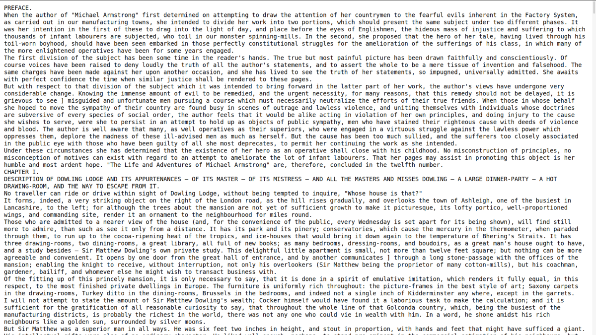

# ELTeC in the TextGrid Repository <br/> <hr/> <br/><p>Christof Schöch, with Johanna Konstanciak, Lisa Zacher, José Calvo Tello, Stefan Funk, Thorsten Vitt, Sabine Schönau, Yi-Hsiu Chen</p> <br/><p><a href="https://distantreading.github.io/eltec2tgrep/">distantreading.github.io/eltec2tgrep</a></p> <br/> <p><strong><emph>WG1 Meeting</emph> | HU Berlin | July 1-2, 2020</strong></p> <hr/> <img height="50" data-src="img/basics/textgridrep.png"> <img height="50" data-src="img/basics/uni-trier.png"> -- ## Overview 1. [Requirements Analysis](#/2) 2. [The TextGrid Repository](#/3) 3. [Demo with ELTeC Data](#/4) 1. [Finding ELTeC](#/5) 2. [Using facets](#/6) 3. [Search by metadata](#/7) 4. [Access file formats](#/8) 5. [Using the shelf](#/9) 6. [Using tools](#/10) 4. [The import routine](#/11) 5. [Conclusion](#/12) -- ## (1) Requirements Analysis --- #### Goal >The key goal is to provide a feature-rich and convenient way to make ELTeC available to people with a wide range of interests and goals --- #### Requirements * Obvious <!-- .element: class="fragment" data-fragment-index="1" --> 1. Available as a public-facing repository website <!-- .element: class="fragment" data-fragment-index="1" --> 2. Provides bulk import with metadata <!-- .element: class="fragment" data-fragment-index="1" --> * Essential <!-- .element: class="fragment" data-fragment-index="2" --> 3. Search and filter/facet functions on relevant metadata (see below) <!-- .element: class="fragment" data-fragment-index="2" --> 4. Software is open source, stable and actively maintained <!-- .element: class="fragment" data-fragment-index="2" --> 5. There is sufficient documentation / help <!-- .element: class="fragment" data-fragment-index="2" --> * Important <!-- .element: class="fragment" data-fragment-index="3" --> 6. Basket and bulk download functions <!-- .element: class="fragment" data-fragment-index="3" --> 7. Long-term hosting, maintenance and storage solved <!-- .element: class="fragment" data-fragment-index="3" --> 8. Provides orientation over ELTeC contents <!-- .element: class="fragment" data-fragment-index="3" --> --- #### Relevant filter/search criteria * Basic bibliographical metadata <!-- .element: class="fragment" data-fragment-index="1" --> * Author <!-- .element: class="fragment" data-fragment-index="1" --> * Title <!-- .element: class="fragment" data-fragment-index="1" --> * Year of publication <!-- .element: class="fragment" data-fragment-index="1" --> * Language <!-- .element: class="fragment" data-fragment-index="1" --> * ELTeC composition criteria <!-- .element: class="fragment" data-fragment-index="2" --> * time period (T1, T2, T3, T4) <!-- .element: class="fragment" data-fragment-index="2" --> * author gender (male, female, other) <!-- .element: class="fragment" data-fragment-index="2" --> * size category (short, medium, long) <!-- .element: class="fragment" data-fragment-index="2" --> * reprint count (low, high) <!-- .element: class="fragment" data-fragment-index="2" --> * Others <!-- .element: class="fragment" data-fragment-index="3" --> * File format (XML-TEI, EPUB, TXT) <!-- .element: class="fragment" data-fragment-index="3" --> --- #### Platforms we considered * Dracor.org * Dspace * GutenTag * Heurist * Laudatio * Omeka * PhiloLogic * TextGrid Repository -- ## (2) The TextGrid Repository --- #### What is TextGrid? * https://textgrid.de/ --- #### TextGrid * TextGridLab <!-- .element: class="fragment" data-fragment-index="1" --> * Environment to prepare digital editions <!-- .element: class="fragment" data-fragment-index="1" --> * Eclipse-based, modular; XML-TEI-centered <!-- .element: class="fragment" data-fragment-index="1" --> * TextGridRep <!-- .element: class="fragment" data-fragment-index="2" --> * data repository for XML-TEI data <!-- .element: class="fragment" data-fragment-index="2" --> * contains the 'Digitale Bibliothek' (large digital library) <!-- .element: class="fragment" data-fragment-index="2" --> * provides a PID to each item (Handle) <!-- .element: class="fragment" data-fragment-index="2" --> * received 'CoreTrustSeal' for trustworthy data repositories <!-- .element: class="fragment" data-fragment-index="2" --> * Community <!-- .element: class="fragment" data-fragment-index="3" --> * A (mostly German-speaking) community of practice <!-- .element: class="fragment" data-fragment-index="3" --> * Institutional context <!-- .element: class="fragment" data-fragment-index="4" --> * Funded 2006-2016 <!-- .element: class="fragment" data-fragment-index="4" --> * Now integrated into DARIAH-DE <!-- .element: class="fragment" data-fragment-index="4" --> -- ## (3) TextGridRep: demo with ELTeC Data --- ### Interacting with TextGridRep 1. Finding ELTeC 2. Using facets 3. Search by metadata 4. Access file formats 5. Using the shelf 6. Using tools <br/>Starting point: https://dev.textgridrep.org/?lang=en -- ## 3.1 Find ELTeC --- #### Find ELTeC (1a) [List by project](https://dev.textgridrep.org/?lang=en) --- #### Find ELTeC (1b) [Find "ELTeC Test"](https://dev.textgridrep.org/projects) --- #### Find ELTeC (2a) [Empty search](https://dev.textgridrep.org/search?query=&order=relevance&limit=10) --- #### Find ELTeC (2b) [Project facet](https://dev.textgridrep.org/search?query=&order=relevance&limit=10&mode=list&filter=project.value:ELTeC+Test) -- ## 3.2 Using facets --- #### Using facets (1) [Start with project facet](https://dev.textgridrep.org/search?query=&order=relevance&limit=10&filter=project.value%3AELTeC+Test) --- #### Using facets (2) [Add language facet](https://dev.textgridrep.org/search?query=&order=relevance&limit=10&mode=list&filter=edition.language:POR&filter=project.value%3AELTeC+Test) (further facets tbd.) --- #### Using facets (3) [Add file type facet](https://dev.textgridrep.org/search?query=&order=relevance&limit=10&mode=list&filter=format:text%2Fxml&filter=edition.language%3APOR&filter=project.value%3AELTeC+Test) --- #### Using facets (4) [Add author facet](https://dev.textgridrep.org/search?query=&order=relevance&limit=10&mode=list&filter=edition.agent.value:Dinis%2C+J%C3%BAlio&filter=format%3Atext%2Fxml&filter=edition.language%3APOR&filter=project.value%3AELTeC+Test) -- ## 3.3 Search by metadata --- #### Search by metadata (1a) [Search for author "Balzac" (expert mode)](https://dev.textgridrep.org/search?query=(edition.agent.value:%22balzac%22)&order=relevance&limit=10&mode=list&filter=project.value:ELTeC+Test) --- #### Search by metadata (1b) [Search for title "sa*" (expert mode)](https://dev.textgridrep.org/search?query=%28title%3Asa*%29&order=relevance&limit=10&filter=project.value%3AELTeC+Test) --- #### Search by metadata (2a) [Search for timeSlot:T3](https://dev.textgridrep.org/search?query=work.temporal.id.value%3A%22timeSlot%22+AND+work.temporal.value%3A%22T3%22&order=relevance&limit=10&filter=format%3Atext%2Fxml&filter=project.value%3AELTeC+Test) --- #### Search by metadata (2a) [Search for timeSlot:T1 and reprints:low](https://dev.textgridrep.org/search?query=%28work.subject.id.value%3A%22reprintCount%22+AND+work.subject.value%3A%22low%22%29+AND+%28work.temporal.id.value%3A%22timeSlot%22+AND+work.temporal.value%3A%22T1%22%29&order=relevance&limit=10&filter=format%3Atext%2Fxml&filter=project.value%3AELTeC+Test) -- ## 3.4 Access file formats --- #### Access file formats (1a) [Starting point: facets/search: download all](https://dev.textgridrep.org/search?query=&order=relevance&limit=10&mode=list&filter=format:text%2Fxml&filter=edition.language%3APOR&filter=project.value%3AELTeC+Test) --- #### Access file formats (1b) [Starting point: search results](https://dev.textgridrep.org/search?query=title:%22life%22&order=relevance&limit=10&mode=list&filter=edition.language:ENG&filter=project.value%3AELTeC+Test) --- #### Access file formats (2) [Add text/xml facet!](https://dev.textgridrep.org/search?query=title:%22life%22&order=relevance&limit=10&mode=list&filter=format:text%2Fxml&filter=edition.language%3AENG&filter=project.value%3AELTeC+Test) --- #### Access file formats (3) [Click title, select file format (note the PID!)](https://dev.textgridrep.org/browse/3thc3.0) --- #### Access file formats (4) [View TXT](https://dev.textgridlab.org/1.0/aggregator/text/textgrid:3thc3.0)  --- #### Access file formats (5) [View TEI](https://dev.textgridlab.org/1.0/tgcrud-public/rest/textgrid:3thc3.0/data) -- ## 3.5 Using the shelf --- #### Using the shelf (1) [Add items to shelf (based on previous search)](https://dev.textgridrep.org/search?query=work.temporal.id.value:%22timeSlot%22%20AND%20work.temporal.value:%22T3%22&order=relevance&limit=10&mode=list&filter=edition.language:FRA&filter=format%3Atext%2Fxml&filter=project.value%3AELTeC+Test) --- #### Using the shelf (2) [Download from shelf (depends on session!)](https://dev.textgridrep.org/shelf) -- ## 3.6 Using tools --- #### Using tools (1) [Start with a work (from query)](https://dev.textgridrep.org/browse/3tht0.0) --- #### Using tools (2) [Select CLARIN tools](https://switchboard.clarin.eu/#/textgridrep/https%3A%2F%2Fdev.textgridlab.org%2F1.0%2Faggregator%2Ftext%2Ftextgrid%3A3tht0.0/text%2Fplain ) --- #### Using tools (3) [View lindat translation](https://lindat.mff.cuni.cz/services/translation/?remoteFileURL=https%3A%2F%2Fswitchboard.clarin.eu%2Fapi%2Fstorage%2F6a1280c6-e4e9-416e-b7d9-0f10a2a0c668&requestedLang=en) <img height="500" data-src="img/6_tools_translate.png"> --- #### Using tools (4) [Explore with Voyant](https://voyant-tools.org/?corpus=545b274b6f8294dc0454a8f1627eacb8&input=https://dev.textgridlab.org/1.0/tgcrud-public/rest/textgrid:3thg0.0/data) --- #### Using tools (5) [Voyant with several texts: query](https://dev.textgridrep.org/search?query=&order=relevance&limit=10&mode=list&filter=edition.language%3APOR&filter=format%3Atext%2Fxml&filter=project.value%3AELTeC+Test) --- #### Using tools (6) [Voyant with several texts: shelf (depends on session!)](https://dev.textgridrep.org/shelf) --- #### Using tools (7) [Voyant with several texts: explore](https://voyant-tools.org/?corpus=88d5dc1eaad29a8af9a909924e8c226e&panels=cirrus,reader,trends,summary,contexts) -- ## (4) The import routine --- #### Three simple steps * Make sure texts are properly encoded * Generate (various) files for import using Python scripts * Import into TextGrid using 'Kolibri' (Java) <br/>Overview / documentation: https://github.com/dh-trier/DistantReading/blob/master/HOWTO.md --- #### (1) Encoding of texts * Texts need to be valid against an ELTeC schema <!-- .element: class="fragment" data-fragment-index="1" --> * Some potential sources of errors: <!-- .element: class="fragment" data-fragment-index="2" --> * identifiers need to be consistent <!-- .element: class="fragment" data-fragment-index="2" --> * we need a publication date in ISO format at some point <!-- .element: class="fragment" data-fragment-index="2" --> * complete author data helps <!-- .element: class="fragment" data-fragment-index="2" --> * Overall, requirements beyond the ELTeC schemas are minimal <!-- .element: class="fragment" data-fragment-index="3" --> --- #### (2) Generate files * The TextGrid metadata schema has several levels <!-- .element: class="fragment" data-fragment-index="1" --> * 'collection' = ELTeC project data <!-- .element: class="fragment" data-fragment-index="1" --> * 'aggregation' = the language collection <!-- .element: class="fragment" data-fragment-index="1" --> * 'work' = the novel; most metadata is here <!-- .element: class="fragment" data-fragment-index="1" --> * 'edition' = the ELTeC edition <!-- .element: class="fragment" data-fragment-index="1" --> * 'item' = any file, e.g. XML, EPUB, TXT files <!-- .element: class="fragment" data-fragment-index="1" --> * Our custom Python scripts do all the work <!-- .element: class="fragment" data-fragment-index="2" --> * 1_extract_metadata.py <!-- .element: class="fragment" data-fragment-index="2" --> * 2_build_grfiles.py <!-- .element: class="fragment" data-fragment-index="2" --> <br/>[Documentation](http://thorstenvitt.de/textgrid-metadata-intro#1_0) and [code repository](https://github.com/dh-trier/DistantReading/tree/master/2020-June) --- #### Files and folders --- #### (3) Import the files: 'Kolibri' * Java application provided by TextGrid * Requires session-ID and collection-ID from TextGridLab * Kolibri uploads all files from a 'hot folder' <br/>Documentation: https://textgridlab.org/doc/services/submodules/kolibri/kolibri-addon-textgrid-import/docs/index.html --- #### Additional features * Project-specific landing page * Project-specific GUI options (work in progress) * Overview [statistics](http://dev.textgridlab.org/1.0/tgsearch-public/search?q=*&facet=work.temporal.value&filter=project.value:DISTANT+READING+NUNABER!&sandbox=true&limit=0) can be generated (and could be visualized) <br/>Documentation: [see https://dev.textgridlab.org/doc/](https://dev.textgridlab.org/doc/services/submodules/kolibri/kolibri-addon-textgrid-import/docs/import_and_configuration.html#project-specific-landing-page-and-project-metadata) -- ## (5) Conclusion --- #### Conclusion * Most requirements are met by TextGridRep <!-- .element: class="fragment" data-fragment-index="1" --> * Exception: [overview of corpus contents](https://distantreading.github.io/ELTeC/) <!-- .element: class="fragment" data-fragment-index="1" --> * Not all our metadata is available in facets at the moment <!-- .element: class="fragment" data-fragment-index="1" --> * Some negative points <!-- .element: class="fragment" data-fragment-index="2" --> * The metadata schema is baroque (handled by script) <!-- .element: class="fragment" data-fragment-index="2" --> * The search interface could be more intuitive <!-- .element: class="fragment" data-fragment-index="2" --> * Additional positive points <!-- .element: class="fragment" data-fragment-index="3" --> * Automatically-generated TXT and EPUB <!-- .element: class="fragment" data-fragment-index="3" --> * Links to Voyant and CLARIN analysis tools <!-- .element: class="fragment" data-fragment-index="3" --> * TextGrid folks have been extremely helpful <!-- .element: class="fragment" data-fragment-index="3" --> -- ### Thank you!<br/><br/>Questions or comments? <br/><br/> <br/><br/> <br/><br/> <br/><br/> slides: https://distantreading.github.io/eltec2tgrep/